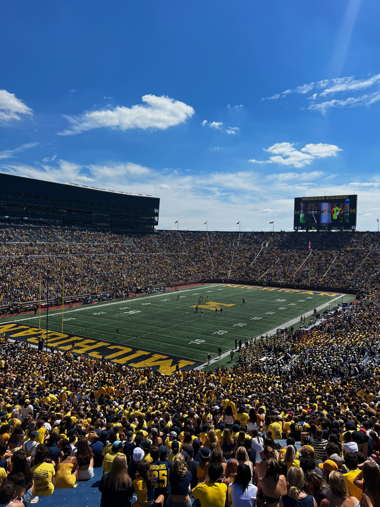
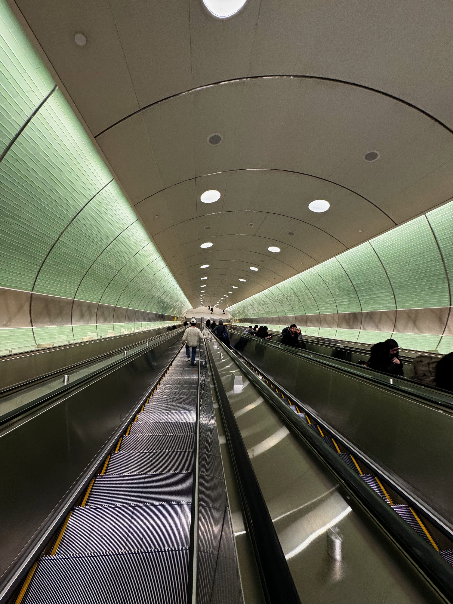
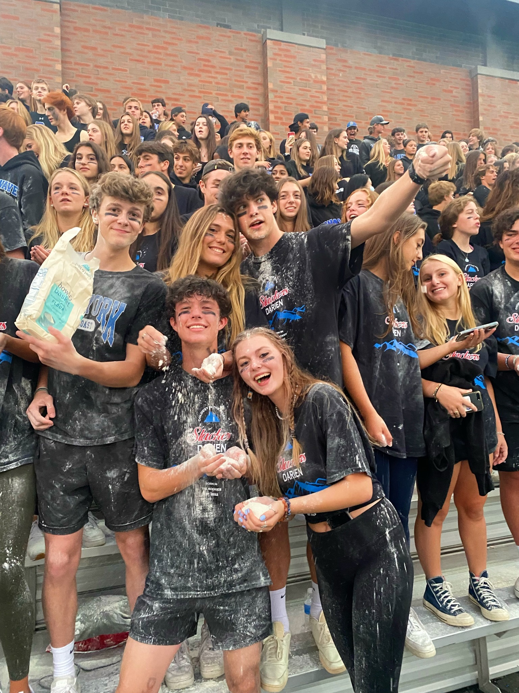
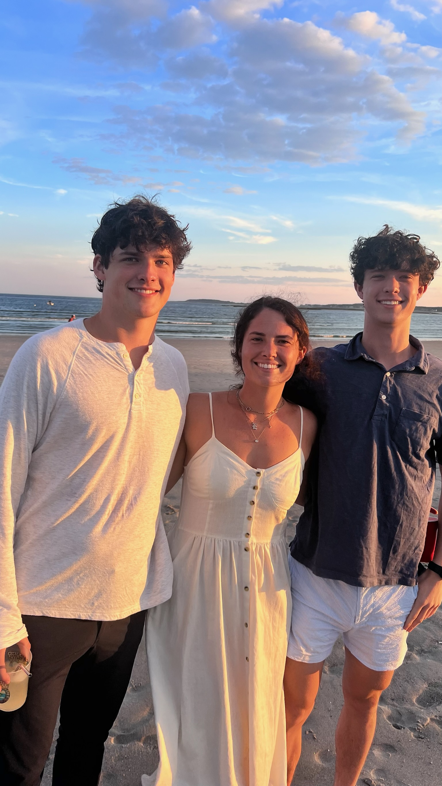

About Me
This guy →
← This one too

Hey, I’m Rowan, I grew up in Darien, Connecticut, a coastal town outside New York City, with my twin brother, Cameron, and older sister, Emma.
I go to Umich, which I chose for its endless energy, school pride, and large size. It gave me the space to explore, change majors five whole times, and fall in love with tech.
I’m especially drawn to AI and app design, any code that genuinely improves people’s lives. Lately, I’ve been diving into robotics through a personal project.
My favorite project so far is a machine learning classifier that differentiates cats and dogs apart using convolutional neural networks, balancing overfitting and accuracy

Outside of school and my career, I love film and write screenplays as a creative outlet. To decompress, I spend time outdoors hiking, running, lifting, or just walking.
I believe humans have the capacity to build paradise on earth and that technology plays a central role in getting us there. My goal is to advance it and keep it accessible.